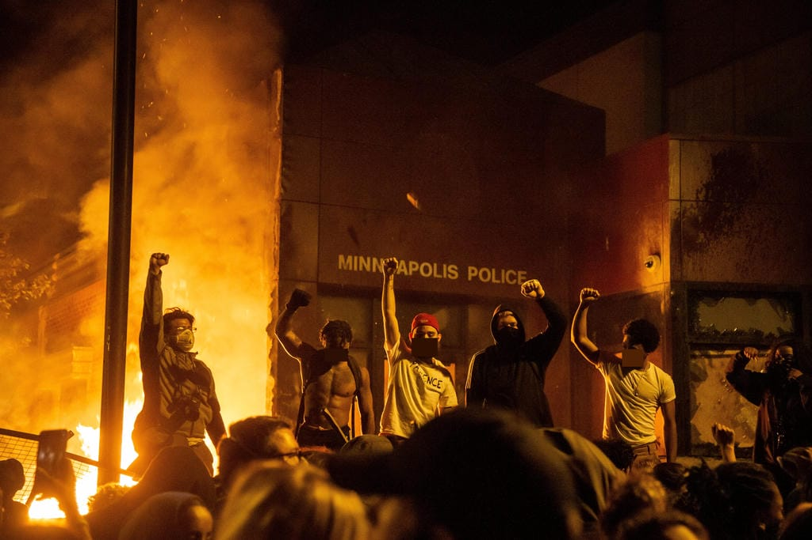

What they call, "the black leadership," does not exist. Let's be serious: what they are talking about is nothing more than a figment of the white liberal imagination. That is, if these so-called black leaders even exist at all, then they can only be found shucking and jiving a "woke" white person's head.
Isn't interesting how progressive whites seem to have a direct line of communication with black leaders, while everyone else in the street fails to suffer from the same delusional schizophrenia? What's all the more odd is that the voices that they hear from these magical negroes always manage say the same things: "Everyone should peacefully protest on the sidewalk, because unmediated black rage makes others uncomfortable." "Don't strike back at that cop even if he wants to kill you and everyone you love." "I know the manager follows black kids from aisle to aisle, but still, his store shouldn't be looted." In other words, the message relayed from the sounds on repeat in a white liberal's head is to end the black revolt and conduct civil disobedience in a manner that is appropriate for Karen and Ethan, not Jamal and Keisha.
It is worthwhile to note that black people, themselves, never refer to any mythical black leadership. This is because we know, full and well, that all of our leaders, since Martin and Malcolm, have been killed. Even our potential leaders, like Trayvon and Tamir, are gunned down before they can share with us their vision. What's more, if they are not brutally murdered, then they are locked away forever with Sundiata, Mutulu, and Mumia. That is, we know that if you speak with truth and move against oppression, then the only way to avoid the pig's bullet or penitentiary, the modern-day cracker's whip or plantation, is to go on the run like Assata Olugbala Shakur! In fact, any black person that says otherwise should be exposed for what he or she is: a poverty-pimp!
After half of century without a figurehead in the front, the black youth has shown the whole country that they are more than capable of setting their own path and directing their own iniatives. They have demonstrated to us a dynamism that can never be reduced to a homogenous mass following any one authoritative voice. Paradoxically, it is the entire spectrum of the black revolt in the streets that can be identified as leaderless "leaders," since they have shown everyone else what it means to free yourself.
To paraphase James Baldwin's still apt observation, we black people are more aware of the inner workings of our pale-face antagonists than they are of themselves. Consequently, the diagnosis of woke whitey's psychological condition is quite simple: this James Earl Jones, Carl Winslow, or Rafiki from the Lion King voice, which bellows off the walls of their skull, is a defense mechanism against their inability to completely repress their own white superiority complex. What's also abundantly clear is that the only way to fully work through this hang up is to gain even a small percent of the courage of a black adolescent and overcome their white guilt with a fist, a stone, and a Molotov cocktail.
- We Still Outside Collective
June 4, 2020
P.S. Fuck 12!